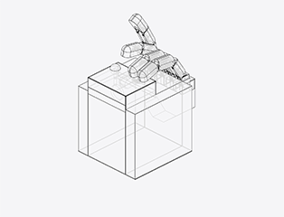
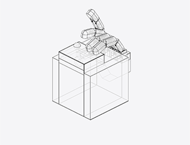

Project 1. Whack a Mole


 


I am super interested in spatial design. I like using transmission structures like gears and cranks to build different devices with different functions.
I have been a huge fan of precise robots since I was young. Every time when I see a machine driven by several transmission components, I dream to build one on my own, and that dream is finally achieved when I take IAT 106. To create such a device, I used a web called Onshape, for it provides me with a visualized modeling environment.
The whole process took about four weeks and five major steps. The installation is based on a box. At the top center of the box, there is a ball back and forth. Beside the box, there is a hand holding on a box. The hand is keep managing to tipping the ball. Yet the chance the hand can reach the ball is fully random.
The installation build up with several different forms of transmission. There are different combinations of cranks works together to drive the finger move. There are also gears and transmission shaft to deliver the power to the hands.
The project was trying to express the idea that the control of opportunities and attempts to overcome difficulties are like the hands in this model. Although it tries its best to reach the ball every time, the final results are not always satisfactory. However, we still need to get ourselves at our best condition for next opportunities.
02. Project 1: Whack a Mole

This project is a spatial design project from IAT 106. In this project, I designed a hand holding on a box, the box have a ball and the band keep managed to tipping at the ball. Yet depending on the mechanism of a four-bar linkage, whether the hand can reach the ball is fully random.
The project was trying to express the idea that the control of opportunities and attempts to overcome difficulties are like the hands in this model. Although it tries its best to reach the ball every time, the final results are not always satisfactory. However, we still need to get ourselves at our best condition for next opportunities.
The specific steps that I build this model.